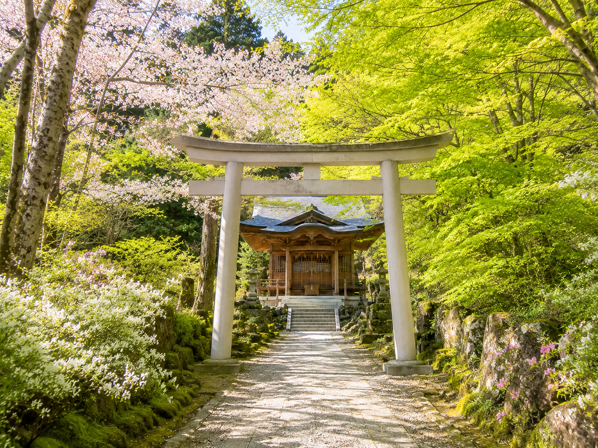

春の杉守村で、静かな杉林と古い信仰の残る山道を歩く。 人混みを避けたい人に向けた、少し不思議な山間の小旅行。

杉守村は、杉守山のふもとにある小さな山村です。観光地として大きく整備されているわけではありませんが、 春になると山道の緑が少しずつ濃くなり、古くから残る杉林や、山道の途中にある 杉鳴神社、そして4月21日に行われた 巡山祭を目当てに、近年少しずつ訪れる人が増えています。
もともとは地元の人に知られる程度の場所でしたが、十年ほど前から、 巡山祭や杉守山周辺の言い伝えに興味を持つ一部の霊異愛好者が訪れるようになりました。 現在では、SNSで「静かな山の中にある雰囲気のいい神社」として 杉鳴神社が紹介され、网红打卡地のように写真を撮りに来る観光客も見られます。
杉守村を訪れる人の多くが立ち寄るのが、山道の途中にある 杉鳴神社です。大きな観光名所というよりも、 杉林の静けさや、春の少し湿った空気が印象に残る場所です。
4月下旬は、桜の名所ほどの華やかさはないものの、山の色がやわらかく変わり始める時期です。 鳥居や石段、杉木立の奥にある小さな社殿は、落ち着いた写真を撮りたい人に向いています。 最近ではSNSで「雰囲気のある神社」として紹介され、写真目的で訪れる人も増えています。
杉守村では、春の山をめぐる行事として 巡山祭が行われています。 今年の巡山祭は4月21日で、村の人々にとっては昔から続く地域行事のひとつです。
一方で、十年ほど前からは、杉守山周辺の言い伝えや噂に興味を持った一部の霊異・怪談好きの人々も この時期に村を訪れるようになりました。 観光イベントとして大きく演出されているわけではないからこそ、 静かな祭礼の雰囲気に惹かれる人もいるようです。
以前の杉守村は、地元の人や一部の好事家に知られる程度の場所でした。 しかし現在では、杉鳴神社の写真がSNSで紹介されるようになり、 「人の少ない春の旅先」や「少し変わった場所に行きたい人向けの穴場」として、 ゆるやかに注目され始めています。
春の杉守村は、桜の名所のような華やかさではなく、静けさや余白を楽しむ旅先です。 山道を歩き、神社に立ち寄り、村に残る巡山祭の気配を少しだけ感じる。 そんな控えめな小旅行をしたい人には、ちょうどよい場所かもしれません。